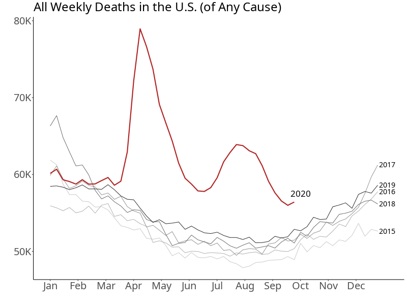
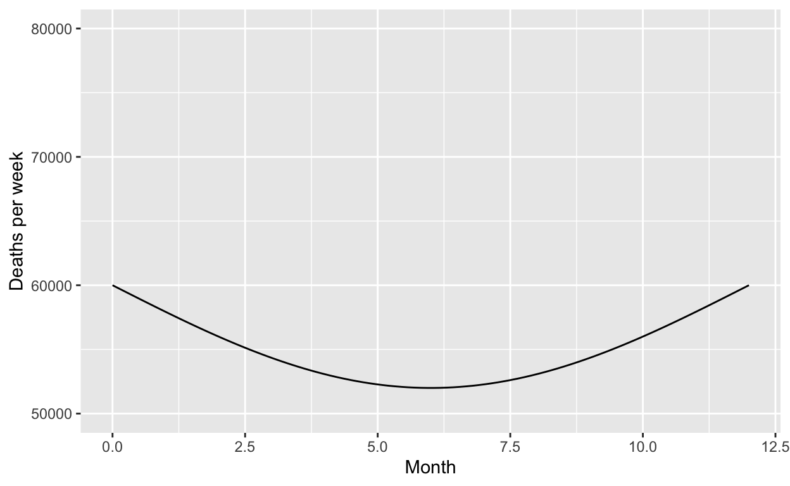

Anti-derivatives are useful when you know how a quantity is changing but don’t (yet) know the quantity itself.
Imagine, for instance, that you are sailing on a straight course across a large lake. Your friend, in the bow of the boat, uses a radar gun to record velocity at each instant. Velocity is, of course, the change in position over time. The recording lasts for 12 minutes, that is 0.20 hour, as shown below.
tmp <- rfun(~ t, seed=638)
vel <- makeFun(1+(10+tmp(30*(t-0.08)))/4 ~ t)
# must match the definitions in the app, belowHow far did the boat travel during the 0.2-hour recording? Distance equals velocity times time. If the velocity were constant, say 4 mph, the distance would be 4 mph \(\times\) 0.2 hour \(= 0.8\) miles. But the velocity is changing over the recording. To do the velocity-times-time calculation we use the standard calculus method of dividing up time into a series of very short time intervals, each of duration \(dt\). Over each of these short time intervals, the boat travels a short distance. For instance, for the interval covering time \(t = 0.05\) hour, the boat travels distance \(\mbox{vel}(0.05) dt\).
Suppose we set \(dt = 0.05\) hour. There would be 5 such 0.05-hour-long intervals over the entire 0.2-hour recording, shown as colored segments in the graph. In the first interval, the boat has velocity that we’ll approximate as \(\mbox{vel}(0)\) and travels roughly \(\mbox{vel}(0) dt\). During the second 0.05-hour-long interval, the boat’s velocity is \(\mbox{vel}(0.05)\) and travels \(\mbox{vel}(0.05) dt\). During the third interval, the velocity is \(\mbox{vel}(0.15)\) and travels \(\mbox{vel}(0.15) dt\). The total distance travelled is \[\mbox{vel}(0.00)dt + \mbox{vel}(0.05)dt + \mbox{vel}(0.10)dt + \ldots + \mbox{vel}(0.15)dt = \\\left[\mbox{vel}(0.00) + \mbox{vel}(0.05) + \mbox{vel}(0.10) + \ldots + \mbox{vel}(0.15)\right] dt = \\14.01\ \mbox{miles/hour} \times 0.05 \mbox{hour}\]
Each of the terms like \(\mbox{vel}(0.10) dt\) is a velocity times a duration of time. This multiplies a quantity on the horizontal axis by a quantity on the vertical axis. Graphically, such a multiplication can be shown as an “area.” But keep in mind that the units of this “area” are miles. (Vertical axis: miles-per-hour. Horizontal axis: hours. Multiply the two quantities: hours \(\times\) miles/hour = miles.)
If you have changed the length of dt and/or clicked show the multiplication as an area, You can scroll up and see the changes to the graph.
The sum above amounts to adding up all those rectangular “areas,” each of which is in the units “miles.”
Another way to write the formula given in the previous section uses the mathematical “sum” symbol: \[\mbox{vel}(0.00)dt + \mbox{vel}(0.05)dt + \mbox{vel}(0.10)dt + \ldots + \mbox{vel}(0.15)dt = \sum_{i=0}^{4} \mbox{vel}(t_i) dt\] The \(t_i\) in \(\sum \mbox{vel}(t_i)\) is a notation for the horizontal location of the \(i^{th}\) segment. Since the length of each segment is 0.05 hour in this example, \(t_i\) is \(i \times 0.05\).
Using the sum notation, we can easily write down the calculation if we set \(dt\) to be 0.01 hour rather than 0.05 hour in which case will have 20 segments covering the 0.2 hours of the recording: \[\sum_{\mbox{i}=0}^{19} \mbox{vel}(t_i) dt\] Or, with \(dt\) set to one-thousandth of an hour there will be 200 segments: \[\sum_{\mbox{i}=0}^{199} \mbox{vel}(t_i) dt\]
The sandbox shows commands to calculate the first two of the sum formulas with \(dt = 0.01\) hour and \(dt = 0.001\) hour respectivly. (The function \(\mbox{vel}(t)\) is given as vel().)
# dt = 0.01 hours
segs <- 0:19 # 20 segments to cover 0.2 hours
time_points <- 0.01 * segs
sum(vel(time_points) * 0.01)
# dt = 0.001 hour
segs2 <- 0:199 # 200 segments to cover in minutes
time_points2 <- 0.001 * segs2 # every 0.001 hour
sum(vel(time_points2) * 0.001)Use the sandbox to calculate the sum over 2000 segments, corresponding to a segment length of 0.0001 hour.
Repeat the calculation, but for 20,000 segments, each of duration 0.00001 hours.
You can see that for \(dt \lessapprox 0.01\), the answer doesn’t depend much on \(dt\). In fact, the radar gun will round off the velocity to the nearest 1/10 mph, so any real accuracy by taking \(dt\) very small is illusory.
You can also see that the calculations themselves are a bit finicky. You have to get the number of segments to correspond to the choice of \(dt\) and convert the segment id number to time properly. Then you add in something of size \(dt/2\) to be in the middle of the segment.
To save all this trouble in accumulating the velocity or any other change function, we simply say, “Integrate the function \(\mbox{vel}(t)\) over the interval \(0 \leq t \leq 0.2\).” In symbols, we write this \[\int_0^{0.2} \mbox{vel}(t) dt\] meaning “sum from time \(t=0\) until time \(t=0.2\).”
The anti-derivative of \(\mbox{vel}(t)\), which we can write \(\mbox{VEL}(t)\), tells the sum of the \(\mbox{vel}(t)\ dt\) segments. Plug in a numerical value for that argument and out will come a numerical value for \(\mbox{VEL}()\) at that input. The one argument of \(\mbox{VEL}(t)\) is the end time of the accumulation.
There is no explicit mention of the start time. As a way of indicating that \(\mbox{VEL}(t)\) doesn’t tell the start time of accumulation, we write the anti-derivative generally as \(\mbox{VEL}(t) + C\). The \(C\) is unknown because the start time is unknown.
Once we know a start time, we can figure out \(C\). Suppose the start time is \(0\). And let’s make, for the sake of argument, the end time be \(t=0\) as well. Common sense tells us that when the start time and the end time are the same, nothing gets accumulated. Thus, whatever \(C\) might be, \(\mbox{VEL}(0) + C = 0\), giving us \(C = -\mbox{VEL}(0)\).
Now suppose we want to know how much is accumulated over the interval \(3 \leq t \leq 8\). The start time is 3, so the relevant choice of \(C\) is \(C = -\mbox{VEL}(3)\).
Now, evaluate the anti-derivative at the end time, 8. The amount accumulated to time 8 is \(\mbox{VEL}(8) + C\). But we now know \(C\) and can re-write the amount accumulated in the interval \(3 \leq t \leq 8\) as \(\mbox{VEL}(8) - \mbox{VEL}(3)\).
In general, if \(F(x)\) is the anti-derivative of \(f(x)\) then the accumulation of \(f(x)\) over the interval \(a \leq x \leq b\) will be \[\int_a^b f(x) dx = F(b) - F(a)\]
Note that, because we specified the start at \(x=a\), we do not have to include the constant \(C\). In a way, \(C\) is just a reminder that \(F(x)\) tells us the accumulation up to \(x\), but without our knowing where the accumulation started.
The anti-derivative lets us split accumulation problems into two pieces:
We can use any technique we like to find the anti-derivative \(F(x)\). When \(f(x)\) is one of our basic modeling functions with a linear interior function (e.g. \(f(x) = e^{kx}\)), we can always write down the formula for the anti-derivative using the rules we have studied (e.g. \(F(x) = \frac{1}{k} e^{kx}\)). Or, if we have a formula for \(f(x)\) that’s more difficult, we can look for a solution that someone else has figured out. But, often, there will be no simple formula for \(F(x)\). In that case, we can use numerical methods like the sum-of-segments we used to find the distance sailed.
The antiD() R operator takes as input a tilde expression defining the function \(f()\), e.g. exp(k*x) ~ x. As an output, it produces a function \(F(x)\). Let’s try:
Use the sandbox and the antiD() function to accumulate the boat’s velocity over the interval from \(t=0.0\) to \(0.2\).
VEL <- antiD(vel(t) ~ t)
# Calculate the definite integralAt minute 4:26 (that is, hour 0.0710), the boat sailed by a red marker buoy. Then at minute 6:45 (that is, hour 0.1075), the boat passed a blue marker bouy. How far apart are the red and blue bouys?
This is an accumulation problem that we can denote as \[\int_{0.0710}^{0.1075} \mbox{vel}(t) dt .\] Use the anti-derivative \(\mbox{VEL}(t)\) computed in the earlier sandbox to calculate the accumulated velocity times \(dt\).
Your house has solar panels on the roof. In sunshine, these generate power. You use some of that power immediately for cooking, lighting, and such. Any power generated above your needs gets stored in a battery. Any power used above the solar generation gets supplied by the battery.
Over the course of a day, your use of power fluctuates (you use the toaster, open the refrigerator, etc). Similarly, the solar generation fluctuates as clouds pass by and the sun rises and sets in the sky. The amount of energy stored in the battery fluctuates over the day as you consume energy in your home and produce it with the solar panels.
The unit used for electrical power is a “kilowatt” (kW). An old-fashioned incandescent light bulb consumes about 0.1 kW while lighted, a modern LED bulb generates about the same amount of light using only 0.01 kW. A refrigerator uses about 0.1 kW while a hair-dryer uses about 1 kW when it is running.
Batteries store energy. The usual unit for energy is “kilowatt-hour” (kWh). A refrigerator will, over a 24-hour day, use 0.1 * 24 = 2.4 kWh. Power multiplied by time duration gives energy. If the power were constant, the energy could be calculated by a simple multiplication of the power over the duration. Since power fluctuates, we can’t do the calculation with ordinary multiplication. Instead, we have to integrate power over time.
The graphs show the situation over the course of a single day.The top graph shows net power produced as a function of time of day. The bottom graph shows net energy accumulated in the battery since 00:00.
Since you are obsessed with your solar system, you have installed an app on your phone. It beeps each time the stored energy in the battery changes by one kW-minute (that is 1/60 of a kWh). The beeps are recorded in the middle graph. The beeps have a low, sad tone when the energy stored is falling (shown as a red line). The beeps have a high, happy tone when the energy stored is rising (shown as a black line).
Note that by click-dragging the mouse over the beep graph—the one in the middle—you can highlight an interval of time. The top and bottom graphs will then show the information corresponding to the beeps during that interval.
Work out this anti-derivative on paper.
Once you have your result, translate it into a correct R function.
F <- makeFun()library(magrittr)
gradethis::grade_result(
fail_if( ~ !is.function(.result), message = "Your result should be in the form of a function."),
fail_if( ~ !all(correct_arguments %in% names(formals(.result))),
message = "You don't seem to have all the right argument names."),
pass_if( ~ all(.result(evaluate_at) ==
answer_fun(evaluate_at))),
fail_if( ~ TRUE, message="Correct arguments, but not the right function.")
) Now that you have the correct answer, use Latex to typeset the formula in the function here. Some Latex tips: a^b will produce \(a^b\), while \frac{a}{b} will produce \(\frac{a}{b}\).
The following graphic was produced based on data from the US Centers for Disease Control in early December 2020. It shows deaths as a function of time of year.

Suppose we want to use the information in the plot to estimate the total number of deaths in 2019. This is conceptually an integral of the death rate over the entire year. An integral has units that are the product of the vertical units times the horizontal units. Here, that’s people.months/week.
As a shortcut we’ll model the 2019 death-rate function as a segment of a sine wave:
f2019 <- makeFun(60000 - 8000*sin(2*pi*t/24) ~ t)
slice_plot(f2019(t) ~ t, domain(t=c(0,12))) %>%
gf_labs(y = "Deaths per week", x="Month") %>%
gf_lims(y = c(50000, 80000))
Here’s the integral over the year:
F2019 <- antiD(f2019(t) ~ t)
F2019(12) - F2019(0)## [1] 658884.5This is a precise-looking answer, but it is completely wrong. There were approximately 3,000,000 deaths in the US in 2019.
REMEMBER: Press the REFRESH button before copying the hash code and submitting it at the USAFA Math 142Z site
Location: CalcZ/_DailyDigitals/DailyDocuments/inst/DD-142Z-03/142Z-DD-03.Rmd